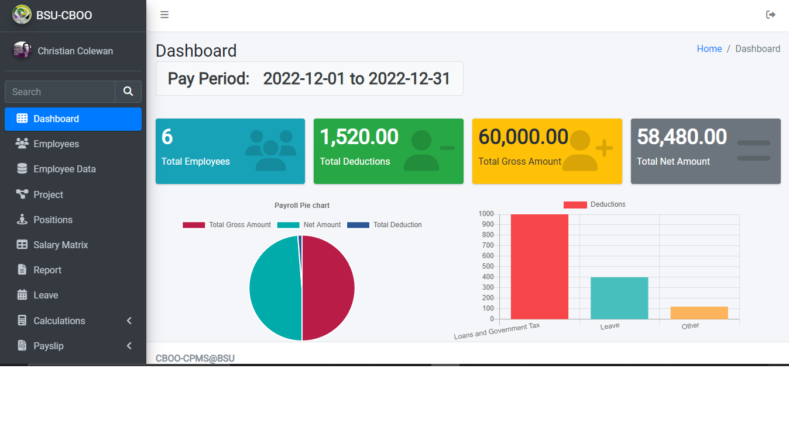
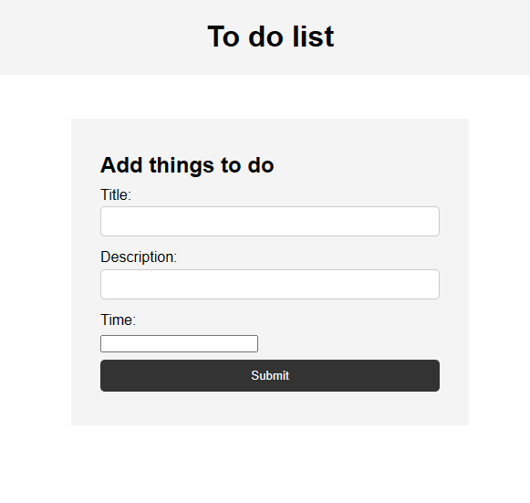
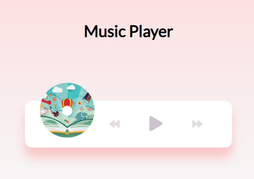
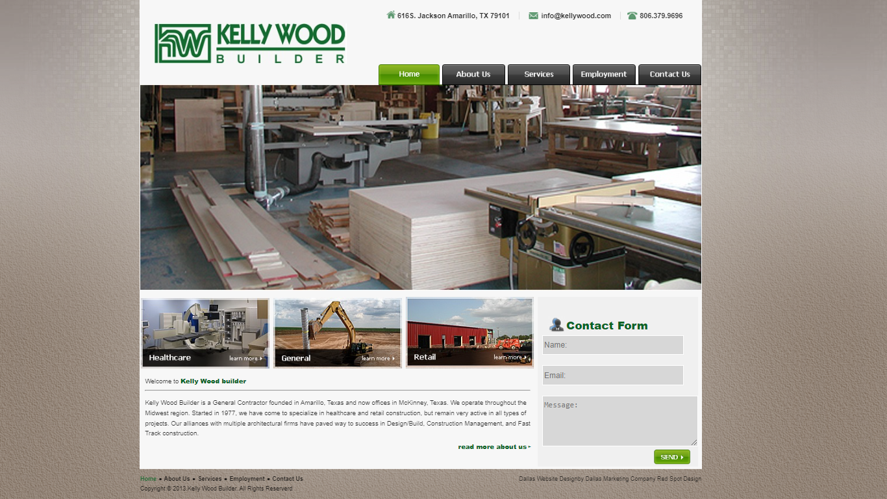
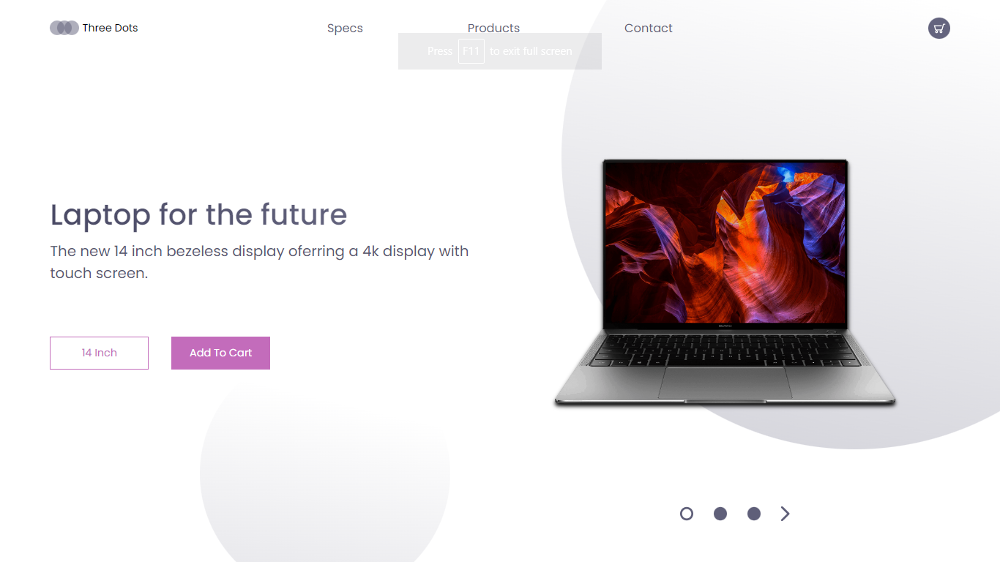
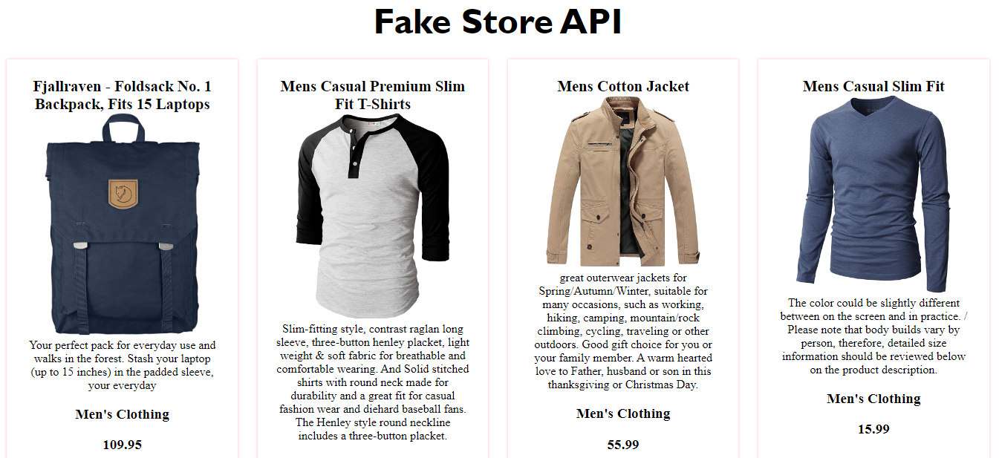
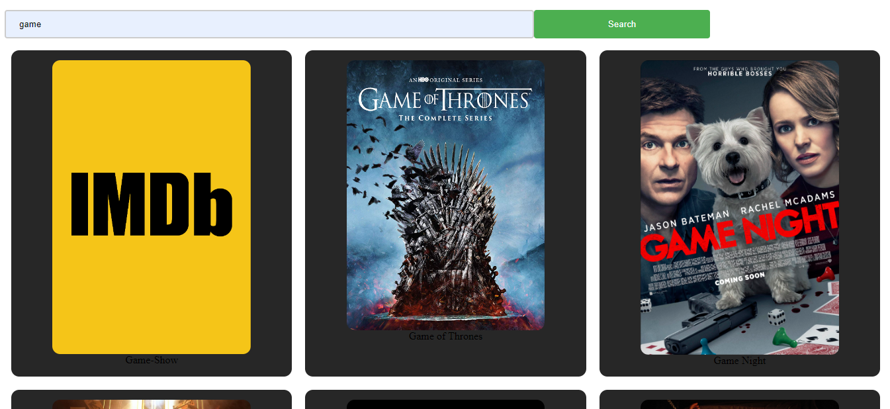

About Me
I am an upcoming BSIT graduate in July 2023, I have a strong foundation in computer science and information technology. I am highly motivated to learn web development, and eager to apply my skills and knowledge to real-world projects. I am a hardworking and dedicated individual with a passion for technology, and committed to continuing my professional development in order to become an expert in my chosen field. With my determination and drive, I know that I am well-equipped to succeed in the dynamic and constantly evolving world of web development.
My Work
-

CBOO Payroll System
Our capstone project was a payroll management system for a university's employee department. We aimed to improve efficiency and accuracy through features such as a client portal for viewing payroll and an admin portal for managing accounts and generating reports. This project was built using PHP as the backend language and MySQL as the database.
-

To Do List
A simple to-do list is a web-based application that allows users to create and manage a list of tasks. The application allows users to add new tasks, mark tasks as complete, and view a list of all their outstanding tasks. The application also includes a search feature that allows users to quickly find specific tasks.
The user interface is straightforward and easy to use, with a clean and modern design. The application is responsive, so it can be accessed from any device with an internet connection.
Overall, this simple to-do list project is a useful tool for individuals and teams looking to improve their productivity and stay organized. It is suitable for users of all skill levels and can be customized to meet the specific needs of different users and organizations. -

Music Player
A simple and intuitive music player built with JavaScript, HTML, and CSS.
Features:
- Play and pause music tracks
- Skip to the next or previous track
- Display the current track and its duration
-

Kelly Wood Builder Landing Page
A sleek and professional landing page designed for Kellywood Builder Company.
It was built using HTML, CSS, and JavaScript, and the design was based on a provided image.
The goal of the landing page is to provide potential customers with an overview of Kellywood Builder Company and its services, and to make it easy for them to get in touch with the company.
-

Laptop Landing Page
A responsive landing page for a laptop store that showcases the latest laptop models and their features.
The landing page is built with HTML, CSS, and JavaScript, and it is fully responsive, meaning it looks great on all devices. The page was created as a practice project to demonstrate the ability to design and build a responsive website.
-

Fake Store
"Fake Store" is a web page that displays a variety of products from a fake store API. The page includes the product name, price, and a description for each item. The page is built using HTML, CSS, and JavaScript, and it uses JavaScript to fetch data from the API and display it on the page. This project demonstrates the ability to use APIs and front-end web development technologies to create a functional and visually appealing web page.
-

Movie Search
This movie search website uses an API and JavaScript to allow users to search for movies and view details such as the title, poster, and release date.
Contact
Christian Colewan
Email: cts.colewan@gmail.com
Phone: 09957139671